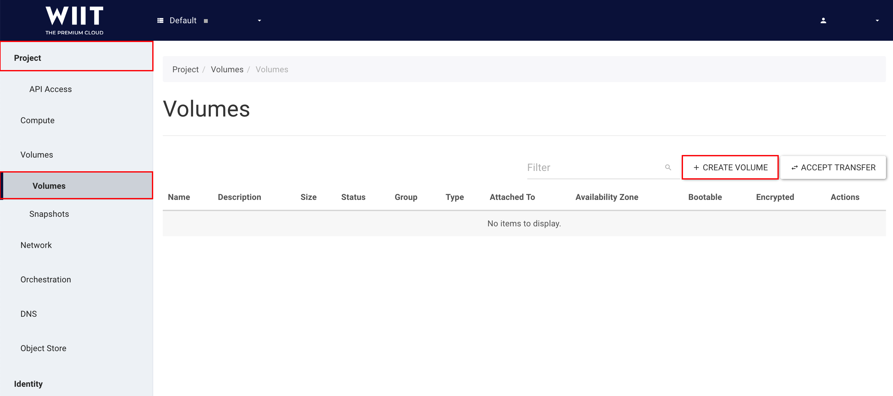
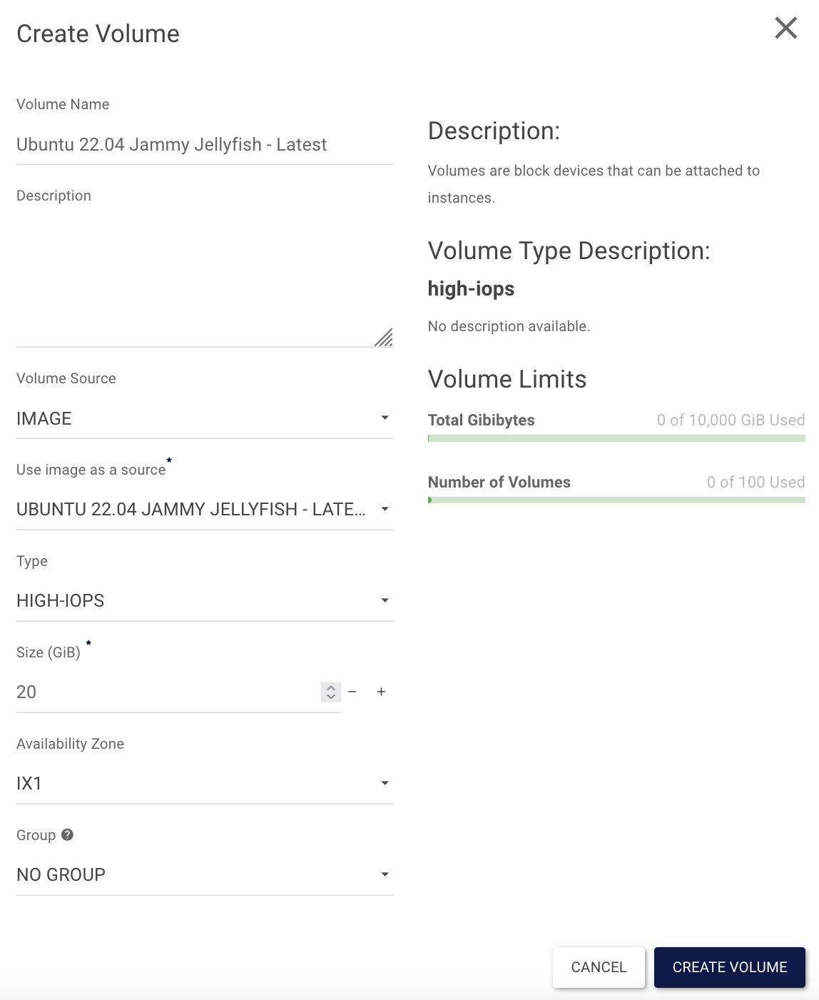
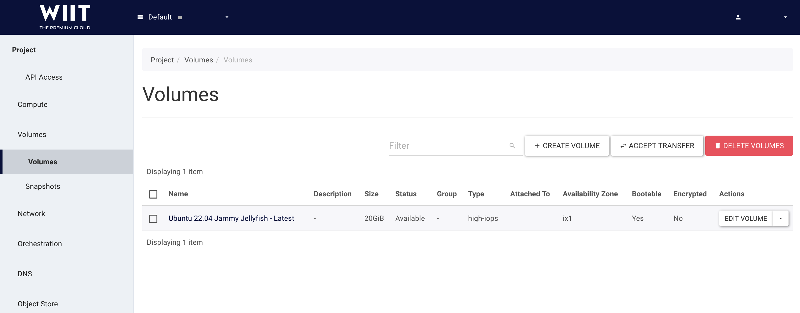
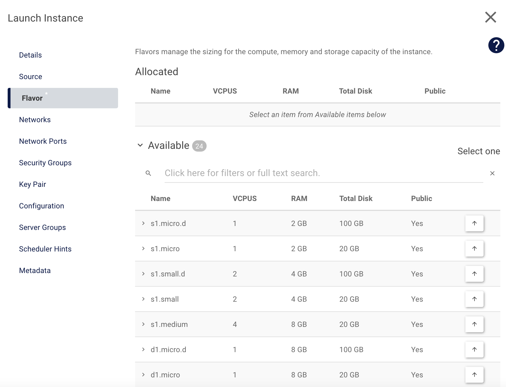
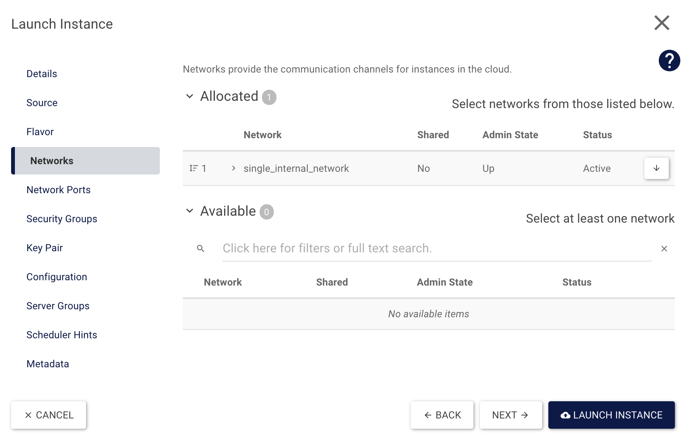

Step 21: Start a VM with an SSD volume
Start
Previously, you created a VM from scratch and also learned some HEAT basics. In this step you will boot a VM from an SSD volume. There are different ways to do this. In this step, we will first outline how to do so using Horizon (Dashboard) and secondly outline a different method which modifies the HEAT-Template from Step 18: Your VM will be reachable via IPv4.
The Horizon (Dashboard) way
To get started, you need to log in to Horizon, as described in “Step 1: The Horizon (Dashboard)” Step 1: The Horizon (Dashboard). Next, create a new volume with Project → Volumes → Volumes and a click on + CREATE VOLUME.

You need to fill in some information in the new overlay; a description for all required fields are below. After filling out the form, click on CREATE VOLUME
- Volume Name: Defines the name of the volume. In our example it will be prefilled with Ubuntu 16.04 Xenial Xerus - Latest.
- Description: If required, you can add a short description. In our example, it is empty.
- Volume Source: You can choose between Image and No source, empty image. Please use Image.
- Use image as a source: You can choose any image, here we used Ubuntu 16.04 Xenial Xerus - Latest (276.2 MB).
- Type: Three options are available high-iops, low-iops or default. To use the SSD storage, you need to choose high-iops.
- Size: You can define the size of the volume, we chose 20 GiB.
- Availability Zone: Again there are three options available Any Availability Zone, es1, or ix1. Use ix1.

After volume creation, it should look like this:

There are two options to start a VM. The first option is to click on the down arrow symbol next to Edit Volume (as pictured above) and click on Launch as Instance.
There will be a new overlay where you can choose the name (Instance Name) and the availability zone. Please use the same availability zone as previously used for the image (ix1).

Switch to Source and choose Volume for Select Boot Source and click on the up-arrow next to the available volume.

Switch to Flavor and choose one of the available flavors by clicking on the up-arrow.

Next you need to choose a network in Networks. Use one of your networks and click on the up-arrow next to it.

Now all required settings are in place and the VM can be started with Launch Instance. If required you can add your own Security Groups and/or Key Pairs.
The HEAT way
This step uses the HEAT Template from Step 18. It will start a VM by default, so the next step is to adapt it, to allow it to create and boot from an SSD volume. First, add a new parameter “availability_zone”:
heat_template_version: 2014-10-16
parameters:
key_name:
type: string
public_network_id:
type: string
default: provider
availability_zone:
type: string
default: ix1
Now add boot_ssd at the end of our template:
boot_ssd:
type: OS::Cinder::Volume
properties:
name: boot_ssd
size: 20
availability_zone: { get_param: availability_zone }
volume_type: high-iops
image: "Ubuntu 16.04 Xenial Xerus - Latest"
You have added a new parameter and will use this in your new volume. To start the VM from the volume, you need to edit Instanz in your template. You can delete or comment out image, because it is already associated with your volume. Now you can add availability_zone, name, networks, and block_device_mapping:
Instanz:
type: OS::Nova::Server
properties:
name: SSD-Test
availability_zone: { get_param: availability_zone }
key_name: { get_param: key_name }
#image: Ubuntu 16.04 Xenial Xerus - Latest
flavor: m1.small
networks:
- port: { get_resource: Port }
block_device_mapping: [
{ device_name: "vda",
volume_id: { get_resource: boot_ssd },
delete_on_termination: "true" } ]
The template is finished and should look like this:
heat_template_version: 2014-10-16
parameters:
key_name:
type: string
public_network_id:
type: string
default: provider
availability_zone:
type: string
default: ix1
resources:
Instanz:
type: OS::Nova::Server
properties:
name: SSD-Test
availability_zone: { get_param: availability_zone }
key_name: { get_param: key_name }
#image: Ubuntu 16.04 Xenial Xerus - Latest
flavor: m1.small
networks:
- port: { get_resource: Port }
block_device_mapping: [
{ device_name: "vda",
volume_id: { get_resource: boot_ssd },
delete_on_termination: "true" } ]
Netzwerk:
type: OS::Neutron::Net
properties:
name: BeispielNetzwerk
Port:
type: OS::Neutron::Port
properties:
network: { get_resource: Netzwerk }
Router:
type: OS::Neutron::Router
properties:
external_gateway_info: { "network": { get_param: public_network_id }
name: BeispielRouter
Subnet:
type: OS::Neutron::Subnet
properties:
name: BeispielSubnet
dns_nameservers:
- 8.8.8.8
- 8.8.4.4
network: { get_resource: Netzwerk }
ip_version: 4
cidr: 10.0.0.0/24
allocation_pools:
- { start: 10.0.0.10, end: 10.0.0.250 }
Router_Subnet_Bridge:
type: OS::Neutron::RouterInterface
depends_on: Subnet
properties:
router: { get_resource: Router }
subnet: { get_resource: Subnet }
Floating_IP:
type: OS::Neutron::FloatingIP
properties:
floating_network: { get_param: public_network_id }
port_id: { get_resource: Port }
Sec_SSH:
type: OS::Neutron:SecurityGroup
properties:
description: Diese Security Group erlaubt den eingehenden SSH-Traffic über Port22 und ICMP
name: Ermöglicht SSH (Port22) und ICMP
rules:
- { direction: ingress, remote_ip_prefix: 0.0.0.0/0, port_range_min: 22, port_range_max: 22, protocol: tcp }
- { direction: ingress, remote_ip_prefix: 0.0.0.0/0, protocol: icmp }
boot_ssd:
type: OS::Cinder::Volume
properties:
name: boot_ssd
size: 20
availability_zone: { get_param: availability_zone }
volume_type: high-iops
image: "Ubuntu 16.04 Xenial Xerus - Latest"
Conclusion
You have learned to start an instance from a volume and how to use SSD storage. Additionally, you have refreshed your heat knowledge and included a volume.